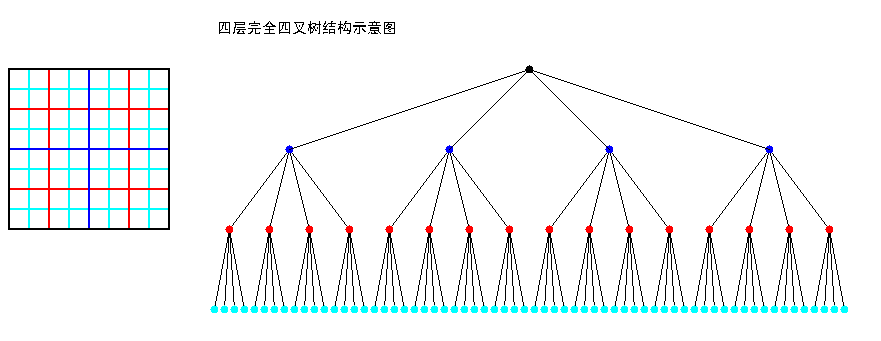
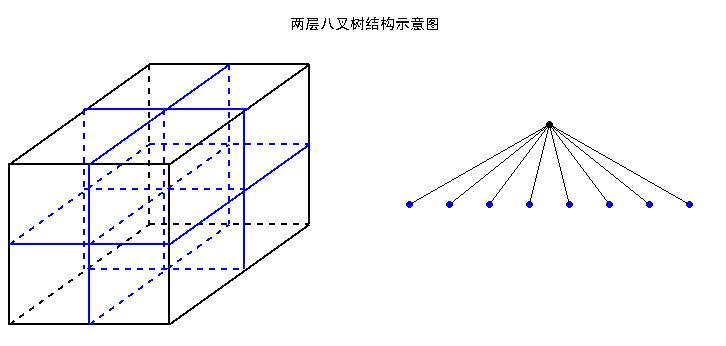
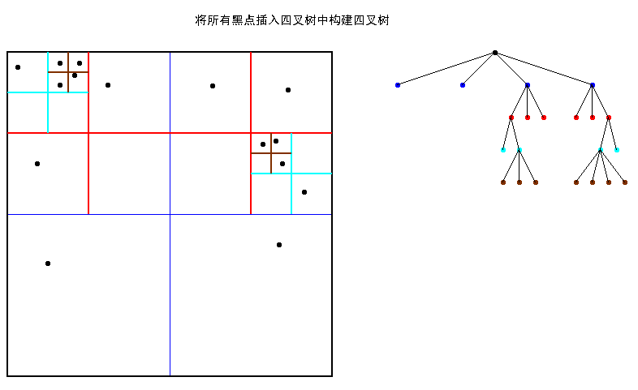
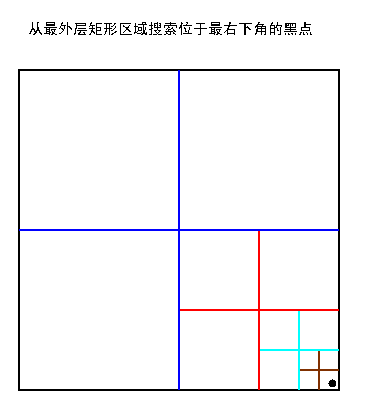

转载：http://blog.csdn.net/zhanxinhang/article/details/6706217
四叉树或四元树也被称为Q树（Q-Tree）。四叉树广泛应用于图像处理、空间数据索引、2D中的快速碰撞检测、存储稀疏数据等，而八叉树（Octree）主要应用于3D图形处理。对游戏编程，这会很有用。本文着重于对四叉树与八叉树的原理与结构的介绍，帮助您在脑海中建立四叉树与八叉树的基本思想。本文并不对这两种数据结构同时进行详解，而只对四叉树进行详解，因为八叉树的建立可由四叉树的建立推得。
四叉树与八叉树的结构与原理
四叉树（Q-Tree）是一种树形数据结构。四叉树的定义是：它的每个节点下至多可以有四个子节点，通常把一部分二维空间细分为四个象限或区域并把该区域里的相关信息存入到四叉树节点中。这个区域可以是正方形、矩形或是任意形状。以下为四叉树的二维空间结构(左)和存储结构(右)示意图（注意节点颜色与网格边框颜色）：

四叉树的每一个节点代表一个矩形区域（如上图黑色的根节点代表最外围黑色边框的矩形区域），每一个矩形区域又可划分为四个小矩形区域，这四个小矩形区域作为四个子节点所代表的矩形区域。
较之四叉树，八叉树将场景从二维空间延伸到了三维空间。八叉树（Octree）的定义是：若不为空树的话，树中任一节点的子节点恰好只会有八个，或零个，也就是子节点不会有0与8以外的数目。那么，这要用来做什么？想象一个立方体，我们最少可以切成多少个相同等分的小立方体？答案就是8个。如下八叉树的结构示意图所示：

/* 一个矩形区域的象限划分：:
UL(1) | UR(0)
----------|-----------
LL(2) | LR(3)
以下对该象限类型的枚举
*/
typedef enum
{
UR = 0,
UL = 1,
LL = 2,
LR = 3
}QuadrantEnum;
/* 矩形结构 */
typedef struct quadrect_t
{
double left,
top,
right,
bottom;
}quadrect_t;
/* 四叉树节点类型结构 */
typedef struct quadnode_t
{
quadrect_t rect; //节点所代表的矩形区域
list_t *lst_object; //节点数据, 节点类型一般为链表，可存储多个对象
struct quadnode_t *sub[4]; //指向节点的四个孩子
}quadnode_t;
/* 四叉树类型结构 */
typedef struct quadtree_t
{
quadnode_t *root;
int depth; // 四叉树的深度
}quadtree_t;
四叉树的建立
利用四叉树分网格，如本文的第一张图，根据左图的网格图形建立如右图所示的完全四叉树。
伪码：
Funtion QuadTreeBuild ( depth, rect )
{
QuadTree->depth = depth;
/*创建分支，root树的根，depth深度，rect根节点代表的矩形区域*/
QuadCreateBranch ( root, depth, rect );
}
Funtion QuadCreateBranch ( n, depth,rect )
{
if ( depth!=0 )
{
n = new node; //开辟新节点
n ->rect = rect; //将该节点所代表的矩形区域存储到该节点中
将rect划成四份 rect[UR], rect[UL], rect[LL], rect[LR];
/*创建各孩子分支*/
QuadCreateBranch ( n->sub[UR], depth-1, rect [UR] );
QuadCreateBranch ( n->sub[UL], depth-1, rect [UL] );
QuadCreateBranch ( n->sub[LL], depth-1, rect [LL] );
QuadCreateBranch ( n->sub[LR], depth-1, rect [LR] );
}
}
假设在一个矩形区域里有N个对象，如下左图一个黑点代表一个对象，每个对象的坐标位置都是已知的，用四叉树的一个节点存储一个对象，构建成如下右图所示的四叉树。

方法也是采用递归的方法对该矩形进行划分分区块，分完后再往里分，直到每一个子矩形区域里只包含一个对象为止。
伪码：
Funtion QuadtreeBuild()
{
Quadtree = {empty}；
For (i = 1;i<n;i++) //遍历所有对象
{
QuadInsert(i, root)；//将i对象插入四叉树
}
剔除多余的节点； //执行完上面循环后，四叉树中可能有数据为空的叶子节点需要剔除
}
Funtion QuadInsert(i,n) //该函数插入后四叉树中的每个节点所存储的对象数量不是1就是0
{
if（节点n有孩子）
{
通过划分区域判断i应该放置于n节点的哪一个孩子节点c；
QuadInsert(i,c)；
}
else if（节点n存储了一个对象）
{
为n节点创建四个孩子；
将n节点中的对象移到它应该放置的孩子节点中；
通过划分区域判断i应该放置于n节点的哪一个孩子节点c；
QuadInsert(i,c)；
}
else if（n节点数据为空）
{
将i存储到节点n中；
}
}
用四叉树查找某一对象
1、采用盲目搜索，与二叉树的递归遍历类似，可采用后序遍历或前序遍历或中序遍历对其进行搜索某一对象，时间复杂度为O（n）。
2、根据对象在区域里的位置来搜索，采用分而治之思想，时间复杂度只与四叉树的深度有关。比起盲目搜索，这种搜索在区域里的对象越多时效果越明显

Funtion find ( n, pos, )
{
If (n节点所存的对象位置为 pos所指的位置 )
Return n;
If ( pos位于第一象限 )
temp = find ( n->sub[UR], pos );
else if ( pos位于第二象限)
temp = find ( n->sub[UL], pos );
else if ( pos位于第三象限 )
temp = find ( n->sub[LL], pos );
else //pos 位于第四象限
temp = find ( n->sub[LR], pos );
return temp;
}